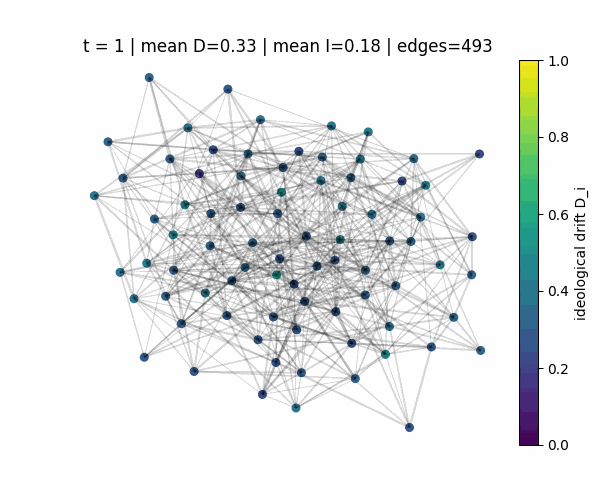

The approach
Built an agent-based Monte Carlo simulation on weighted friendship networks. Isolation, exposure, ideological drift and friendship decay interact; intervention scenarios change amplification and social support.

What the analysis shows
The model provides a way to explore feedback loops and compare interventions under a common set of assumptions. Network dynamics reveal behavior that a static average would hide.
How to read the results
These are simulated outcomes. The model does not establish empirical causal effects of recommendation systems or real interventions.